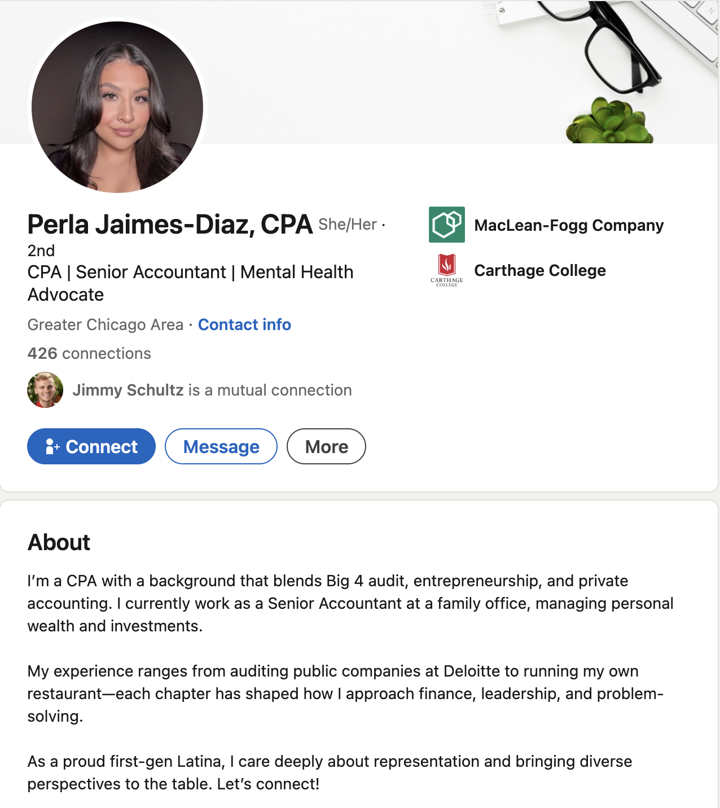
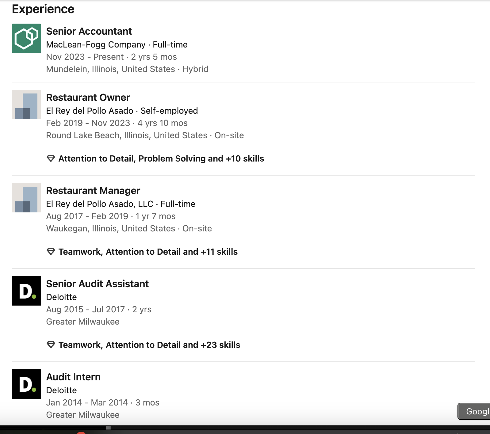

Profile 1: Perla Jaimes-Diaz, CPA
A CPA who moved between Big 4, entrepreneurship, and in-house accounting
Header and About Section

Full text transcript of this screenshot
Profile photo: Professional headshot of Perla Jaimes-Diaz.
Name and headline: Perla Jaimes-Diaz, CPA. She/Her. 2nd-degree connection. Headline: "CPA | Senior Accountant | Mental Health Advocate."
Location: Greater Chicago Area. Contact info link visible. 426 connections.
Affiliations (right side): MacLean-Fogg Company. Carthage College.
Mutual connection: Jimmy Schultz is a mutual connection.
Action buttons: Connect, Message, More.
About section (full text):
"I'm a CPA with a background that blends Big 4 audit, entrepreneurship, and private accounting. I currently work as a Senior Accountant at a family office, managing personal wealth and investments."
"My experience ranges from auditing public companies at Deloitte to running my own restaurant - each chapter has shaped how I approach finance, leadership, and problem-solving."
"As a proud first-gen Latina, I care deeply about representation and bringing diverse perspectives to the table. Let's connect!"
Experience

Full text transcript of this screenshot
Position 1: Senior Accountant at MacLean-Fogg Company. Full-time. Nov 2023 - Present. 2 yrs 5 mos. Mundelein, Illinois, United States. Hybrid. Skills: Attention to Detail, Problem Solving and +10 skills.
Position 2: Restaurant Owner at El Rey del Pollo Asado. Self-employed. Feb 2019 - Nov 2023. 4 yrs 10 mos. Round Lake Beach, Illinois, United States. On-site.
Position 3: Restaurant Manager at El Rey del Pollo Asado, LLC. Full-time. Aug 2017 - Feb 2019. 1 yr 7 mos. Waukegan, Illinois, United States. On-site. Skills: Teamwork, Attention to Detail and +11 skills.
Position 4: Senior Audit Assistant at Deloitte. Aug 2015 - Jul 2017. 2 yrs. Greater Milwaukee. Skills: Teamwork, Attention to Detail and +23 skills.
Position 5: Audit Intern at Deloitte. Jan 2014 - Mar 2014. 3 mos. Greater Milwaukee.
Licenses and Certifications

Full text transcript of this screenshot
Certification 1: Certified Personal Finance Manager (CPFM).
Certification 2: Certified Public Accountant (CPA). Issued by the State of Wisconsin, Department of Safety and Professional Services.
Skills

Full text transcript of this screenshot
Skills heading
Skill 1: Accounting. 2 experiences at Deloitte. Certified Public Accountant (CPA). Passed LinkedIn Skill Assessment. "Show all 4 details" link.
Skill 2: Financial Reporting. 2 experiences at Deloitte. Certified Public Accountant (CPA). Endorsed by 2 colleagues at Deloitte. "Show all 4 details" link.
Footer: "Show all 28 skills" button.
What to notice about Perla's profile
- Headline strategy: She uses the pipe character (|) to separate three distinct signals: credential, role, and personal brand. A recruiter scanning search results gets all three without clicking in.
- Nonlinear career as a strength: Instead of hiding her restaurant years, she positions them as part of a coherent story about leadership and problem-solving. The About section explicitly connects the dots.
- About section as narrative: Three paragraphs, each with a purpose: current role and background, how experience connects, personal identity and call to action.
- Skills backed by evidence: Each skill links to experience entries, certifications, or assessment results rather than standing alone.